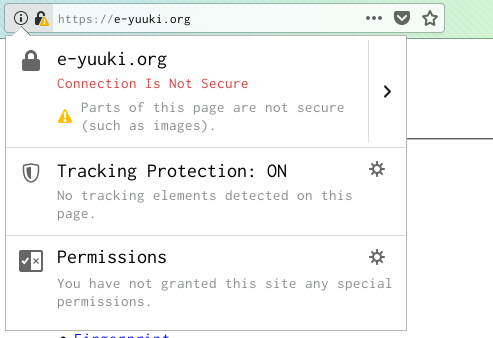

Last Update:
creativecommons.orgでは任意のCCライセンス表記をHTMLコードで出力できる。WebページにCCライセンスを明記するときにとても便利だ。CC0の場合、 https://creativecommons.org/choose/zero/から権利放棄者の情報を入力していくことで以下のようなHTMLコードが得られる。
<p xmlns:dct="http://purl.org/dc/terms/" xmlns:vcard="http://www.w3.org/2001/vcard-rdf/3.0#">
<a rel="license"
href="http://creativecommons.org/publicdomain/zero/1.0/">
<img src="http://i.creativecommons.org/p/zero/1.0/88x31.png" style="border-style: none;" alt="CC0" />
</a>
<br />
To the extent possible under law,
<a rel="dct:publisher"
href="https://e-yuuki.org">
<span property="dct:title">Yuuki Enomoto</span></a>
has waived all copyright and related or neighboring rights to
<span property="dct:title">e-yuuki.org</span>.
This work is published from:
<span property="vcard:Country" datatype="dct:ISO3166"
content="JP" about="https://e-yuuki.org">
Japan</span>.
</p>
よく見るとHTMLではなくXHTMLである。ソフトウェアを使って著作物の公開者について解析できるので理にかなっているものの、僕はHTMLが欲しかった。ソースコード上でXHTMLの宣言を書いていないとw3cのvalidatorで検査したときにXHTML特有の記述が引っかかってしまう。
さらにimgタグで画像のパス指定にHTTPSを使っていないとFirefoxでは警告が出る。
このコードの気に入らない点は、HTMLを使いたいのにXHTMLであること、画像のパスにHTTPSを使っていないこと、そして画像と文章に空白を入れる目的でbrタグを使っていることだ。これらを修正してすっきりしたコードにする。
結論、次のようにコードになった。
<div style="text-align:center;padding-top:2em;padding-bottom:2em;">
<a rel="license" href="https://creativecommons.org/publicdomain/zero/1.0/"><img src="https://i.creativecommons.org/p/zero/1.0/88x31.png" alt="CC0" /></a>
</div>
<p>
To the extent possible under law, <a href="mailto:uki@e-yuuki.org">Yuuki Enomoto</a> has waived all copyright and related or neighboring rights to e-yuuki.org. This work is published from: Japan.
</p>
XHTMLに関係するコードはすべて削除した。次にHTTPはすべてHTTPSに置き換えた。これでブラウザからの警告が出ることはなくなった。またCSSで画像の位置とパディングを調整している。見た目の調整は基本的にCSSでおこなうべきだ。くわえて公開者の名前にaタグでmailtoを使っているので、オリジナルのコードと比べ連絡をとりやすいという点からするとわかりやすくなっている。
このコードは本Webページにも使われている。やりたいことをすべて実現できたので満足している。